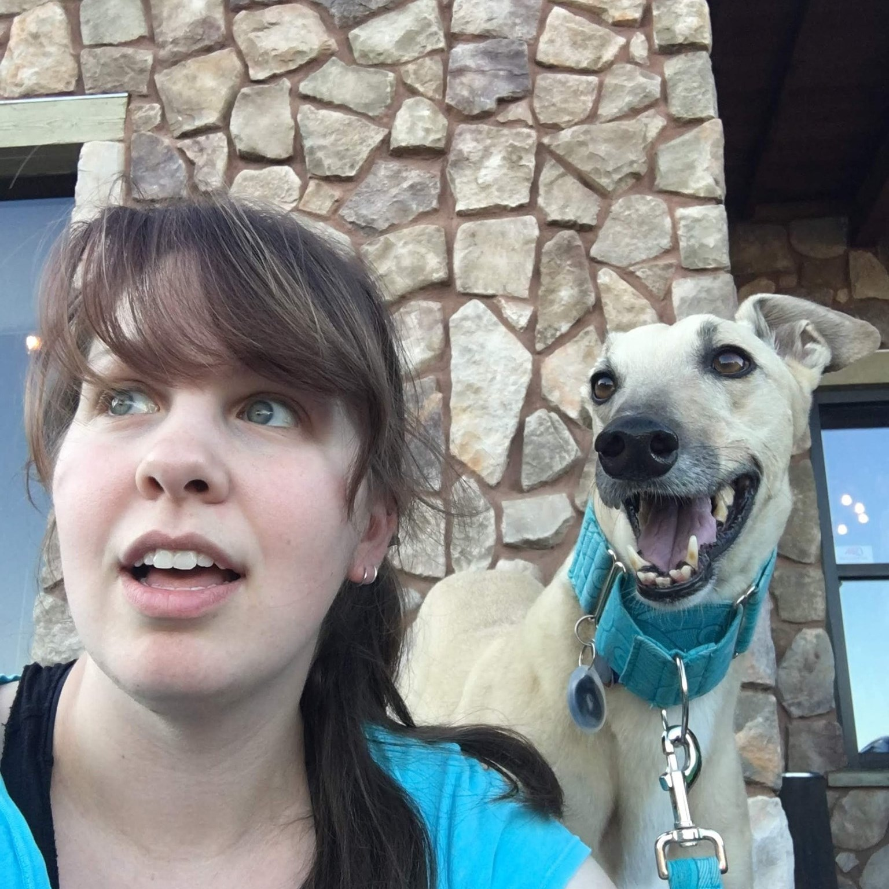

Hi, I'm Andrea.
I have a lot of interests, and I like using them and my broad skill set to help others, whether through education, advocacy, or research.
As someone who values succinct, direct communication but is also a bit like a squirrel when it comes to experiences, interests, and identity, structuring an "about me" is genuinely difficult. So let's just focus on the basics.

Professional Background
Practitioner, researcher, and educator.
Financial Education
I'm an Assistant Director in University Bursar and run the Student Money Management Center for the University of Illinois System. In that role I facilitate financial education in-person and online, and provide experiential learning opportunities for students in instructional design, assessment, marketing communications, and data analytics.
I like to use data to inform direction and strategy, which has led me to focus more on data analysis internships than the traditional peer mentoring model often associated with college financial wellness programs.
Educational Psychology
My data-driven approach to practice is part of what pulled me toward research. I'm a PhD candidate in Educational Psychology at the University of Illinois Urbana-Champaign, with research interests in information visualizations, self-regulated learning, and user experience design in informal education for adults.
My background also includes an AA in Psychology from Richland Community College, a BS in Psychology, and an EdM in Human Resource Development from the University of Illinois Urbana-Champaign.
Personal Interests
Since interest is a precursor to engaging in informal learning, it only seems fair to share some of my own.
As an undergraduate I took studio arts courses across drawing, design, sculpture, ceramics, and photography, and that interest has never really left. It shapes how I think about visualizations and instructional design more than people might expect.